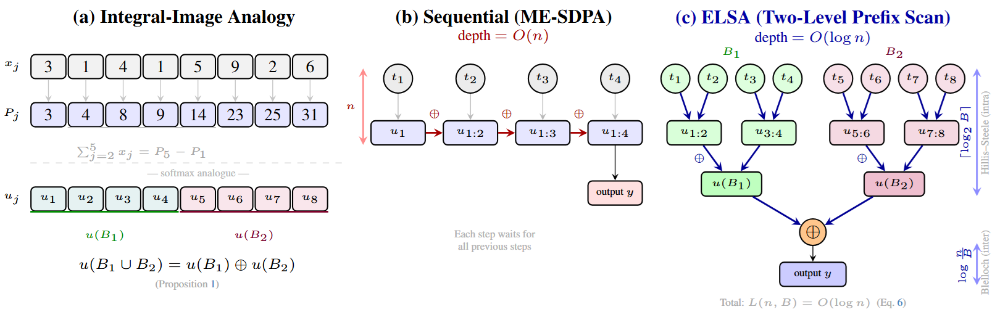

Standard attention is slow, and FlashAttention (FA) is strictly bound to specialized hardware (Tensor Cores). ELSA breaks this limitation by turning attention into a "Parallel Scan" problem. It achieves O(log n) parallel depth and O(n) memory on any hardware—from data-center GPUs to embedded devices—without losing precision or requiring zero retraining. Drop it into CLIP or SAM and get up to 3.5x speedup on FP32.
Abstract
Existing attention accelerators often trade exact softmax semantics or suffer from sequential depth that limits throughput[cite: 1717]. We present ELSA, an algorithmic reformulation of softmax attention that preserves exact semantics in real arithmetic[cite: 1718]. By casting the online softmax update into a prefix scan over an associative monoid of triples $(m, S, W)$, ELSA achieves $O(n)$ extra memory and $O(\log n)$ parallel depth[cite: 1719]. Implemented in Triton and CUDA C++, it improves FP32 inference latency over memory-efficient SDPA by 1.3–3.5x as a drop-in replacement with no retraining required[cite: 1722].
Motivation: Breaking the Sequential Chain
Classical image processing utilizes Integral Images to optimize regional sums into constant time. However, standard Softmax Attention remains trapped in a Sequential Recurrence because exponential scaling and normalization terms are mutually dependent across tokens[cite: 1807, 1809].

While accelerators like FlashAttention reduce memory, they are strictly hardware-bound to Tensor Core fusion (HMMA/GMMA)[cite: 1735, 1768]. On older GPUs, AMD devices, or embedded systems like Jetson TX2, these advantages disappear[cite: 1769]. ELSA breaks this chain by:
Algorithmic Parallelization: We treat the attention state as a one-dimensional analogue of integral images, allowing us to merge partial sums in parallel[cite: 1822, 1823].
Hardware Agnosticism: By using an associative monoid scan, ELSA removes the dependency on specialized hardware instructions[cite: 1770, 1883].
Precision Integrity: Unlike Linear Attention variants that approximate the operator, ELSA is exact, maintaining full interactions without retraining foundation models[cite: 1764, 1826].
Method: Parallel Monoid Scan
ELSA transforms the sequential online softmax recurrence into a fully parallelizable computation by proving that attention states $(m, S, W)$ form an associative monoid[cite: 1833, 1834].
We utilize a two-level scan architecture: intra-block Hillis-Steele and inter-block Blelloch[cite: 1721, 1854]. This reduces the critical path to $O(\log n)$, providing a high-throughput solution for diverse platforms where traditional hardware fusion is not applicable[cite: 1886].
Performance Benchmarks
Evaluations on NVIDIA A100 show that ELSA's throughput gains scale significantly as sequences grow[cite: 1889, 2004].
Sequence Length (Tokens)
FP32 Speedup (vs. ME-SDPA)
Peak Memory (FP32)
1,024 [cite: 2004]
1.3x [cite: 2004]
0.11 GB [cite: 1953, 1956]
4,096 [cite: 2005]
3.1x [cite: 2005]
0.15 GB [cite: 1953, 1956]
16,384 [cite: 2005]
3.5x [cite: 2005]
0.34 GB [cite: 1953, 1955]
BibTeX
@inproceedings{hsu2026elsa,
title={ELSA: Exact Linear-Scan Attention for Fast and Memory-Light Vision Transformers},
author={Hsu, Chih-Chung and Ma, Xin-Di and Liao, Wo-Ting and Lee, Chia-Ming},
booktitle={Proceedings of the IEEE/CVF Conference on Computer Vision and Pattern Recognition (CVPR) Findings},
year={2026}
}